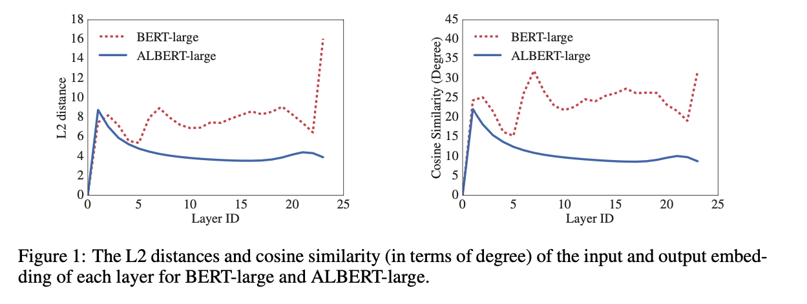
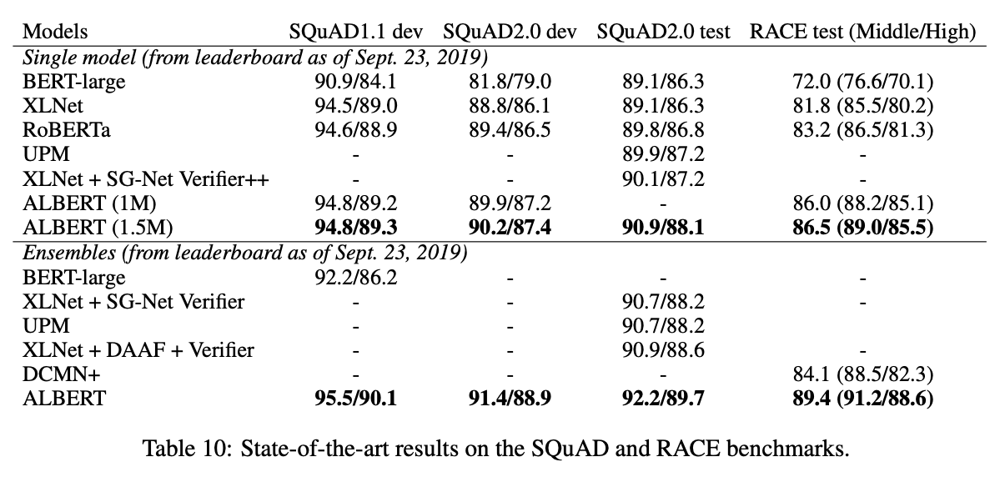

1. Read the title and make an opinion of what’s in the paper (e.g., the area, the task)
ALBERT: A LITE BERT FOR SELF-SUPERVISED LEARNING OF LANGUAGE REPRESENTATIONS
I love how people are creative to make memorable titles. I didn’t realize ALBERT was smaller and lighter than BERT, since it had improved results, I just assumed it was larger. That’s what I get for assuming…
Its pretty clear from this title what they are going for.
2. Read the abstract well and form a hypothesis of
- What’s new in the paper?
- Do you have a clear overview about what the paper is all about?
However, at some point further model increases become harder due to GPU/TPU memory limitations and longer training times.
Its also good to know that big companies are invested in minimizing the size of these large models because it seems they have infinite compute to keep pumping out 1B+ parameter models.
We present two parameter-reduction techniques to lower memory consumption and increase the training speed of BERT
Okay, an easy to read abstract. I like it!
We also use a self-supervised loss that focuses on modeling inter-sentence coherence, and show it consistently helps downstream tasks with multi-sentence inputs.
They don’t give the two methods used to reduce parameter count but I know what I’m looking for:
- First Parameter Reduction Technique
- Second Parameter Reduction Technique
- Better scaling
- Inter-Sentence Cohesion
3. Look at the images and extract a set of “questions” about what is not clear about their method from the images. Now your job is to answer these questions by reading the paper.
Dare I present the only figure in the first 4 sections?

This does not give me a lot of questions to “extract”. I guess I’ll have to put on my reading glasses and see what is going on. I do see from this figure that they are comparing embeddings which I’ve personally found to be strange with BERT, that the final embeddings can be pretty different. Anyways, I’m intrigued.
4. Read the method aiming to answer your “questions” about the paper. Focus on understanding only the things relevant for the story (i.e., to understand the contribution).
The first one is a factorized embedding parameterization. By decomposing the large vocabulary embedding matrix into two small matrices, we separate the size of the hidden layers from the size of vocabulary embedding. This separation makes it easier to grow the hidden size without significantly increasing the parameter size of the vocabulary embeddings.
I would love to see some details on this. If BERT’s embedding size is 768 with 30k tokens, does that result in a 30k*768 (23Mb) matrix?
The second technique is cross-layer parameter sharing. This technique prevents the parameter from growing with the depth of the network. Both techniques significantly reduce the number of parameters for BERT without seriously hurting performance, thus improving parameter-efficiency
Both of these advancements leave me with questions. Why does cross-layer parameter sharing work? Or, what is the point of going deeper if the parameters are the same?
The paper states that parameter sharing has a regularizing effect on top of saving parameters (by about 18x).
Sentence Ordering Objectives
ALBERT uses a pretraining loss based on predicting the ordering of two consecutive segments of text.
They state that this is a better pretraining task than NSP.
Factorized Embedding Parameterization
They make this good point:
From a modeling perspective, WordPiece embeddings are meant to learn context-independent representations, whereas hidden-layer embeddings are meant to learn context-dependent representations.
It seems that WordPiece is working against BERT. To this point, I only faintly grasp. I understand that their point of splitting the embedding space into 2 matrices and dropping the embedding size gains them memory savings, but I would have a tough time teaching it to a coworker.
Cross-layer parameter sharing
My understanding of this is that they are sharing parameters between say Layer 1 and Layer 2. This may be a misunderstanding. Instead of sharing just FFN parameters or Attention parameters, ALL parameters are shared in ALBERT.
5. Read the experiments to convince you that the show results are caused by their claim. Be aware that the experiments highlighted are the best scenarios and are fully hyper-parameter tuned.
They have a lot of experiments showing that the ALBERT style of parameter sharing is extremely powerful in producing effective results with much less parameters.
Here is their SOTA results on SQuAD and RACE:

6. Make sure you answered all your questions. Did the authors convince you that their story has the effect that they claim?
There is a lot to understand from this paper. I wish I was able to visualize everything a little bit better. I was very surprised by the parameter sharing memory/performance benefits, and I’d love to understand more fundamentally where that comes from.